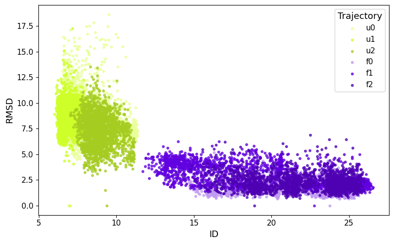
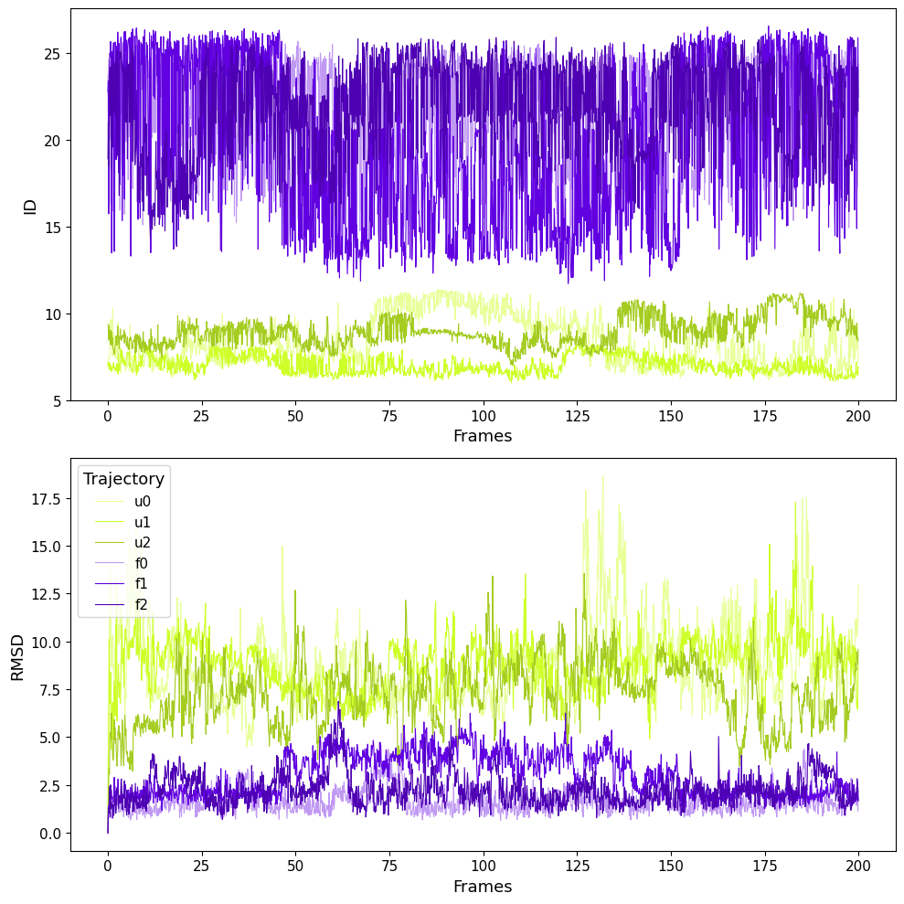
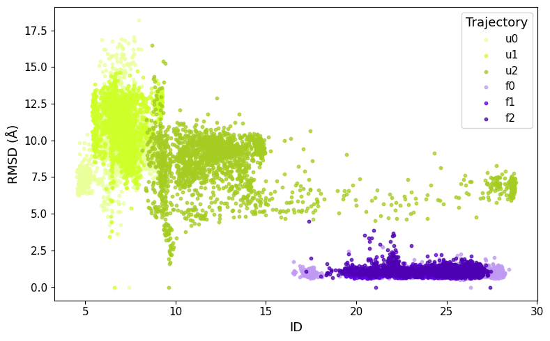
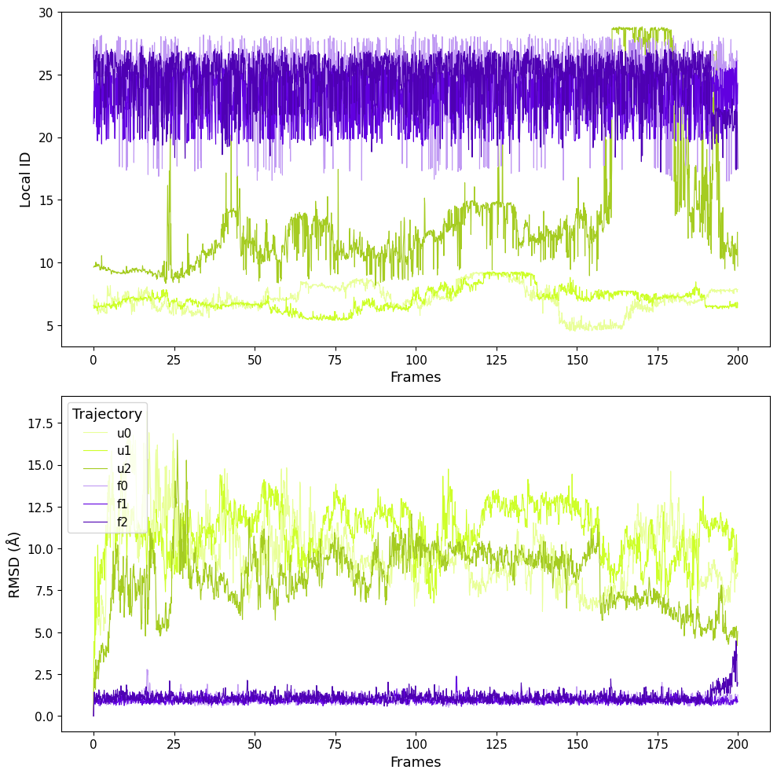

Comparison RMSD
As the two metrics provide similar results, despite being significantly different, we compared them on both villin and NTL9.
RMSD is a measure of the displacement of the atoms from a reference structure, whereas ID, in this case, can detect different features of the protein.
Villin


NTL9

